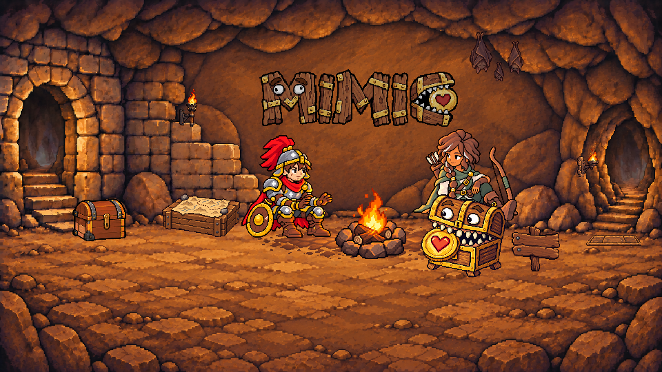
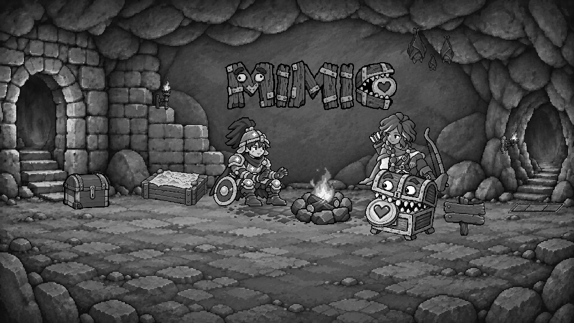

Landing — 壓力板 attempt-05
awaiting-calibration · 僅審外觀 · C
壓力板順著右通道朝右上延伸；保留暖赭橘褐石材、三塊板面、細外框與前緣下沉縫。候選尚未核准。本輪不審位置。
畫布 96×18；origin (850,339)；opacity 0.85。前方長邊仍約 80px，左端落點維持；擴寬部分容納後方右移。標題、人物、寶箱 v04、其餘道具與背景固定。
實際大小與細節
attempt-05 · 1× · 96×18attempt-05 · 4×真實灰階 · 1×真實灰階 · 4×
attempt-04 對照
attempt-04 · 1× · 80×18attempt-04 · 4×attempt-04 · 真實灰階 4×attempt-05 前緣 · 8×attempt-04 前緣 · 8×
樓梯量測與輪廓導引
先從不含 prop 的 architecture 底圖，人工標記最下方三階左側上角 (857,326)、(871,312)、(883,299)，以最小平方法擬合 x 對向上 y。每階相鄰斜率 1.000、0.923，整體 0.963437 px／上升 1px。角點人工選取約有 ±1px 不確定性；圖中青色十字可供覆核。
architecture-only · 樓梯取樣點 · 4×生成前建立 · 無材質輪廓與三格分隔 · 8×青線：原導引圖／底圖：實際候選 · 同座標 8× 疊合
alpha 外緣量測：左 1.000000、右 0.916667；相對差 8.33%。兩者朝右上，均落在樓梯斜率 ±25%，相對差 ≤20%。attempt-04 左 0.773810、右 -0.773810，左右異號，負向對照未通過。
規則固定為 alpha≥200 的外緣，在不透明高度中央 20–70% 的列分別擬合兩短邊，避開後緣倒角與前方垂直立面；兩版與未通過嘗試使用相同規則。疊合圖保留原始輪廓差異，未扭曲候選去貼合導引。
實際場景與樓梯口
attempt-05 · 全景隨視窗縮放
960×540 實際 1× 全景（可水平捲動）
attempt-05 · 960×540 · 1×attempt-04 桌機全景對照

真實灰階全景

色彩與機關縫隙驗證
板內 S 0.707723、V 0.577809；地板 S 0.689398、V 0.506929；V 差 0.070880。符合 S ≥0.58、V 差 0.02–0.08。前緣連續深暖褐縫 96.25%（77/80px）。
色彩沿用前輪 HSV 算術平均與門檻；遮罩依導引形狀調整：相對 origin 的 y=4…10，每列從 x=4+round((17−y)×樓梯斜率) 起取 72px；地板為 96×18 包絡外 2px 環帶。同一固定遮罩也量測 attempt-04，結果存於 manifest。這與前輪舊矩形不同，因此不宣稱完全相同取樣數值。
青色：固定板內取樣遮罩 · 4×
來源、原始嘗試與 prompt
Built-in ImageGen；第一次完整使用文件 attempt-05 原文編修 selected attempt-04。前兩張右短邊斜率不足（0.300、0.500），均保留原稿。兩次重試只針對平行四邊形幾何，retry-02 通過。衍生僅做單一等比最近鄰取樣、alpha 門檻與透明 RGB 歸零，無手繪補圖、變形或色彩替換。
- 文件原文首次編修 · 原始 PNG · 實際 prompt · Rejected: right alpha short-edge slope below required range
- retry-01 · 原始 PNG · 實際 prompt · Rejected: right alpha short-edge slope below required range
- retry-02 · 原始 PNG · 實際 prompt · Candidate awaiting appearance review
原 attempt-01～04 lineage（唯讀保留） · attempt-05 lineage · 量測與導引紀錄 · 完整 manifest